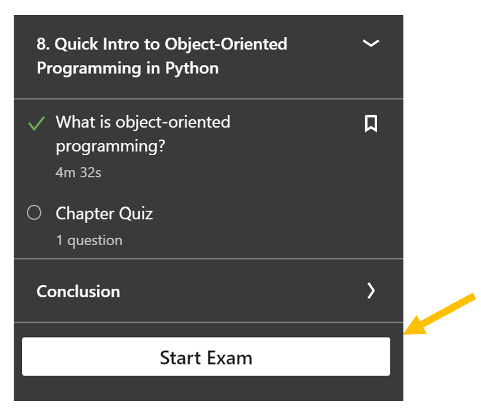

1. Welcome to MSE 2114#
Important
See our course Canvas site for information on homework requirements, due dates, course expectations, grading, regrading, and announcements.
Make sure you follow these links to setup the Anaconda version of python on your computer:
After watching and following along with “Getting Started with Python,” you should be able to answer this week’s homework problems. Below are just a few additional comments and examples that might help.
The following functions and topics are discussed below:
if-elsef-string
defforloopimport numpylist comprehension
np.logvsnp.log10
Note
There are many apps for your phone that also teach python. Linked-in learning has an app as well so you can watch our first lesson directly on your phone. The app Python 3 Tutorials is pretty good and you can try searching for apps related to Data Science or Python Pandas.
1.1. Converting your jupyter notebook to pdf for submission in Canvas#
The menu File / Download as / pdf – does not work well.
You need to use File/Print Preview and then right click to select print. From the print dialogue, change the printer to Save as PDF or Print to PDF Annotator.
{kind=link}
Fig. 1.1 In the print menu, select “Save as PDF” or “Print to PDF Annotator”#
1.2. Importing numpy#
At the top of your notebook, you should import the numpy extension to python. You will need this for several of the problems this week.
import numpy as np
The “np” is an alias so you can type np.sqrt() for example rather than numpy.sqrt().
In Canvas there is a folder called “short lessons.” These can be helpful as quick reminders on how to do something. You can also search in google or use the help menu in the jupyter notebook. You might want to look at the short lesson “math operations.”
Note
It is important to start keeping a notebook called “cheat sheet” where you place common codes that you will need over and over again or how to do certain tasks such as import an excel file, etc. There is also an android app called “Data Science Cheat Sheets” that contains a nice cheat sheet for Python.
import numpy as np #we need this for all statements below that begin np. for example np.log()
1.3. Writing your own functions and the if-else statement#
Functions are extremely useful in python. An example is given below. The formatting is very important especially the indents. If a line ends with a colon, the next line must be indented. The function below also gives the formatting for the if, else conditional statement. Again, notice the indented formatting.
def is_even(x):
if x%2==0: #the mod function "%" gives the remainder after dividing in this case by 2
print( "That number is even")
else:
print("That number is odd")
is_even(5)
That number is odd
Warning
Don’t use input() statements in your code. Write functions instead for changing variables for a repeated calculation.
Let’s just look at the if-else statement by itself. Here we have to set x to a value before entering our if-else. Try copying the code below into your own notebook and change the value of x.
x=5
if x%3==0: #the mod function here is checking if x is divisible by 3
print( "Yes, x is divisible by 3")
else:
print("No, x is not divisible by 3")
No, x is not divisible by 3
It is very important in programming to always think logically step by step through your code. Flow charts are a great way of visualizing what your code is doing (or what you intend your code to do). Below is a flow chart for the if-else statement. You can see here that the if-else is just a logical test with two outcomes -> True or False
{kind=link}
Fig. 1.2 Visualizing the ‘if-else’ statement#
1.4. f-string for formatted output#
It would be nice if our output replaced “x” with its actual value so that our output was more helpful. We can do this with the f-string. The f located in front of the string ” ” says to look for { } and replace the variables with values. Let’s write a function to check if a number is divisible by 3 and return the number along with whether it is or is not divisible by 3.
def isdiv3(x):
if x%3==0: #the mod function gives the remainder after dividing x/3
print(f"Yes, {x} is divisible by 3") ## notice the f in front of our string " "
else:
print(f'No, {x} is not divisible by 3') ## notice the use of { } around our variable
isdiv3(18)
isdiv3(19)
Yes, 18 is divisible by 3
No, 19 is not divisible by 3
Note
The f-string example above might be one of those things you save in your cheatsheet notebook.
1.5. numpy log functions#
The numpy.log() function is base “e” and numpy.log10() is base “10”
This is typically true of most programming languages. You could also write your own functions so that you could just use ln() and log().
We should have already run the code: import numpy as np previously in this notebook. If not, run it now.
def ln(x):
return np.log(x)
def log(x):
return np.log10(x)
ln(100)
4.605170185988092
log(100)
2.0
Also, the constant e can be obtained by np.e
np.e
2.718281828459045
print("Click on the card below to view the answer. Click Next> to advance to the next card.")
display_flashcards(cards)
Click on the card below to view the answer. Click Next> to advance to the next card.
1.6. Some basic looping#
Let’s start the dicussion on looping with considering the flow chart for a basic for loop. The for loop is given a list of items to be used one-by-one in the loop body. This could be as simple as:
for x in [3,5,9]:
print(x)
which would give the output:
3
5
9
for x in [3,4,5,6,7]:
print(x**2)
9
16
25
36
49
if you would like to print a list of the results rather than the result from each iteration, then we need to store the results into a list within the loop body and use .append() to update the list each iteration of the for loop. Our print statement now goes outside the for loop as shown below.
y=[] #initialize an empty list for our outputs
for x in [3,4,5,6,7,8]:
y.append(x**2) # append the current value of x**2 to the list y
print(y)
[9, 16, 25, 36, 49, 64]
…or maybe we want to also find the sum of the squares
y=[] #initialize an empty list for our outputs
sum=0 #initialize our variable sum
for x in [3,4,5,6,7,8]:
y.append(x**2) # append the current value of x**2 to the list y
sum=sum+x**2 # add the current value of x**2 to our sum
print(y)
print(sum)
[9, 16, 25, 36, 49, 64]
199
sum=sum+x**2 works because the right side is always calculated first and then this value is assigned to the variable named on the left. In our case it would look like:
sum = 0 initial value (outside loop)
enter loop: sum = current value of sum + current value of x**2
sum = 0 + 9 first iteration
sum = 9 + 16 second iteration
sum = 25 + 36 third iteration
and so on…
Click on the card below to view the answer. Click Next> to advance to the next card.
1.7. Special loop: List Comprehension#
This gives a nice compact way of defining a loop where the returned value is a list of outputs from each iteration.
[ value_to_save for iteration_var in list_of_items ]
[x**2 for x in [3,4,5,6,7]] #list comprehension style
[9, 16, 25, 36, 49]
Compare the above code to the for loop:
y=[]
for x in [3,4,5,6,7]:
y.append(x**2)
y
[9, 16, 25, 36, 49]
1.8. Exercises#
1.8.1. Problem 1:#
Prereq:
Open a new Jupyter notebook and answer the questions below. If a question below only requires a text response, just use a “markup” cell. Include the problem statements below in your notebook. Use the assignments link in Canvas to upload a pdf version of your notebook.
You learned that the two main types of data sequences in Python are the list and the tuple. Explain in 3 sentences or less what the difference is between the two. We will mainly use the “list.” When might you want to use the tuple instead?
Which of the following is an example of a list: a. (1,2,3,4,5), b. [1,2,3,4,5], c. {1,2,3,4,5}, or d. <1,2,3,4,5> ?
Find the square root of 83.
Find a random integer between 10 and 50.
Write a function that takes a numeric value (x) and returns 0 if x is less than 0, returns x if x is between 0 and 1, returns 1 if x is greater than 1.
Using a For loop, multiply the sequence of numbers “3,4,5,6,7” by 7 and print the result of each iteration. Your output should be 21, 28, 35, 42, 49.
Write a function that takes the variables: load (in N), diameter ( in m), elastic_modulus (in GPa), and yield_strength (in MPa). The function should return “not elastic” if the applied stress is greater than the yield_strength and return the strain if the applied stress is less than or equal to the yield_strength. The strain should be calculated using Hooke’s law. Test values: load = 5600 N, diameter = 10 mm, E = 97 GPa, and yield_strength = 150 MPa. Answer: strain = \(7.35 \times 10^{-4}\)
1.8.2. Problem 2:#
After completing “Getting Started with Python”, take the exam and submit a copy of the certificate that you earned. The link for the exam can be found at the bottom of the table of contents in the left panel.
{kind=link}